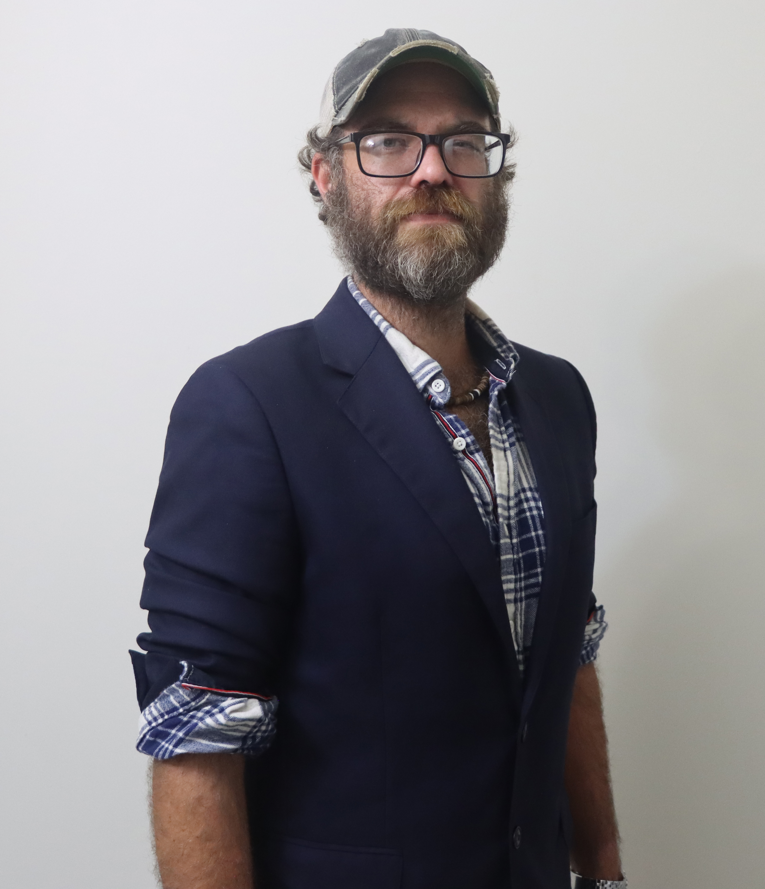

Corty Byron
Candidate for Borough Council — Ward 2
About Corty
Corty Byron is a lifelong Elizabethtown resident whose family has a long tradition of public service, including his grandfather’s time on Borough Council. A professional musician, Corty believes in building harmony even when voices differ. Inspired by his family’s leadership, he is stepping forward to help Etown remain a community where people can disagree yet still work together for the common good.
Priorities
- Responsive borough services and transparent communication.
- Safe neighborhoods with traffic calming, crossings, and lighting.
- Support for small businesses and a vibrant downtown.